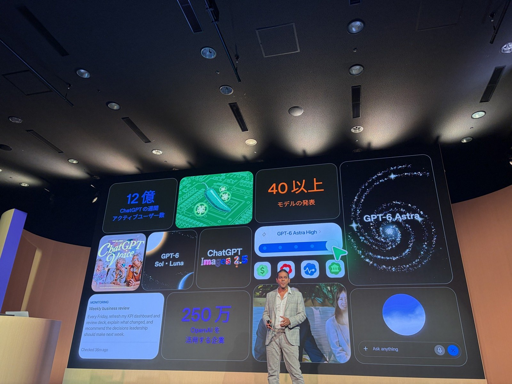
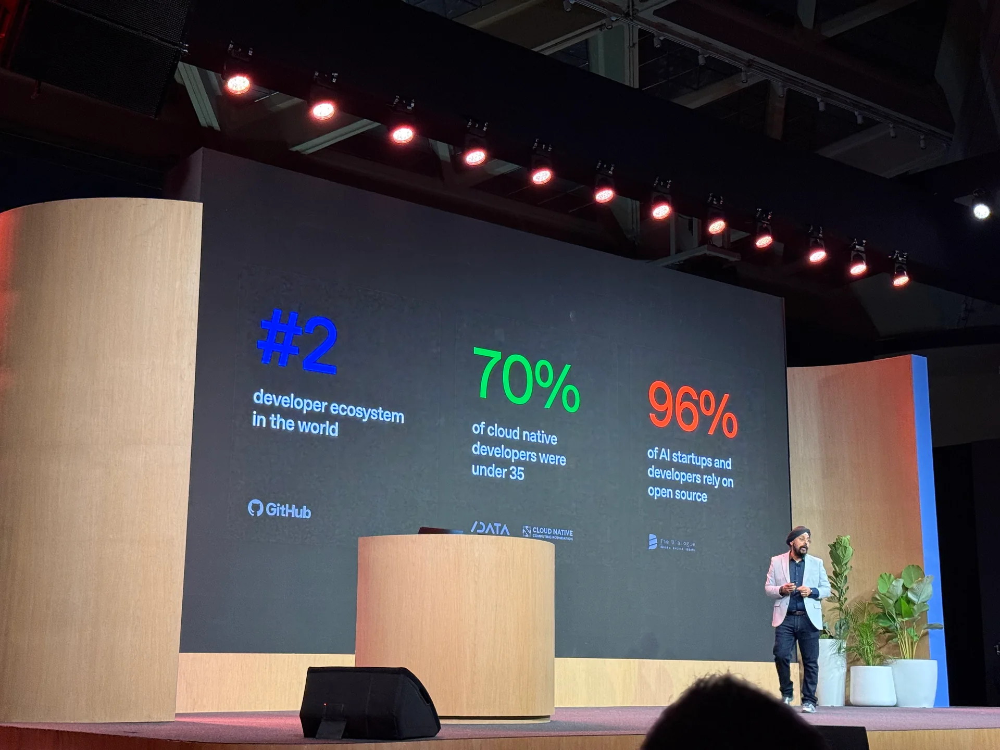
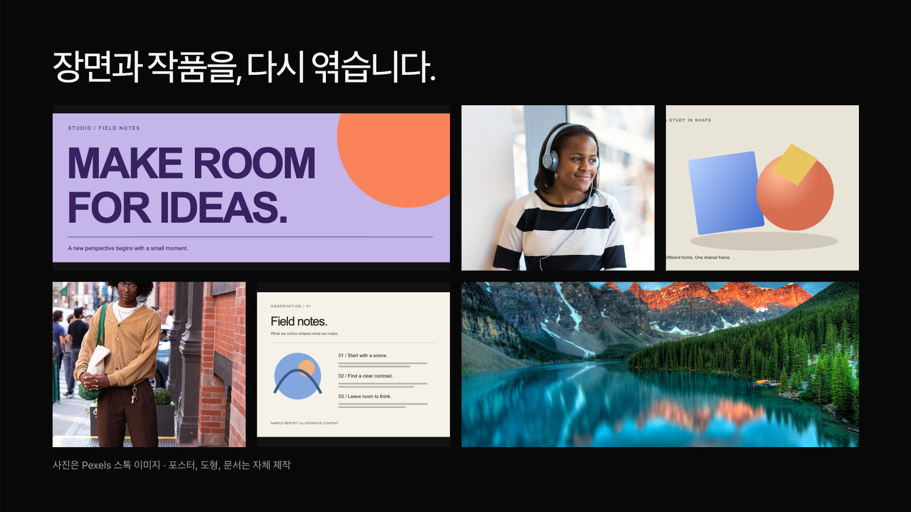
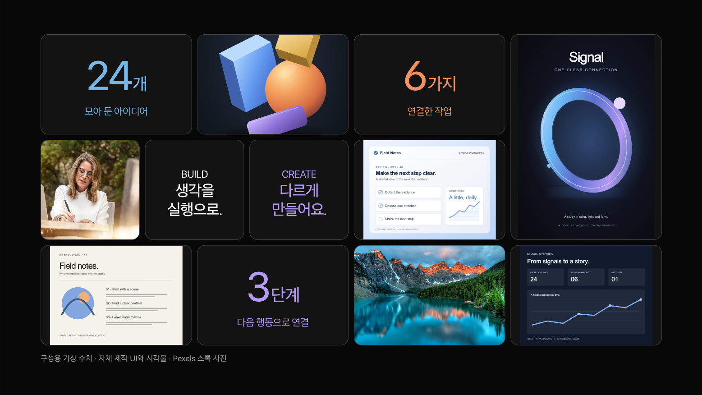
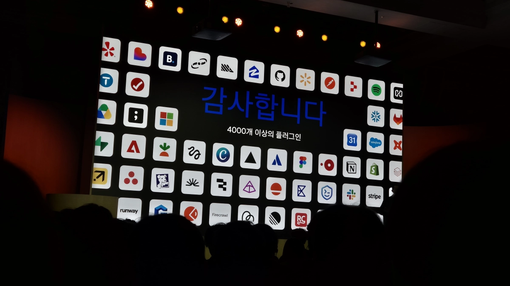
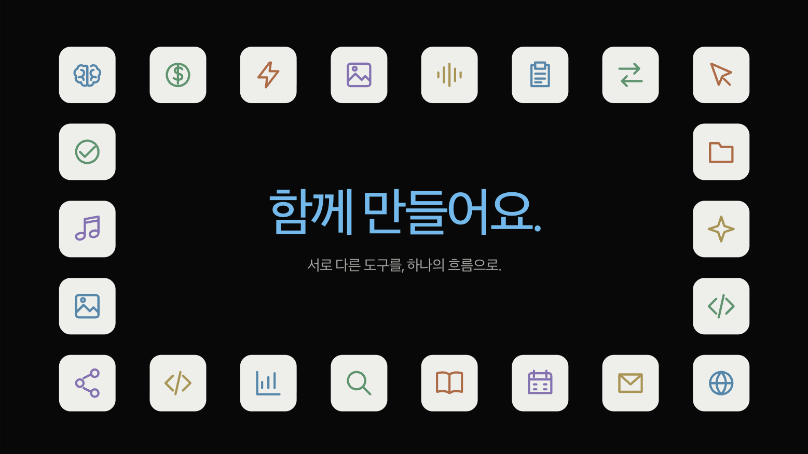
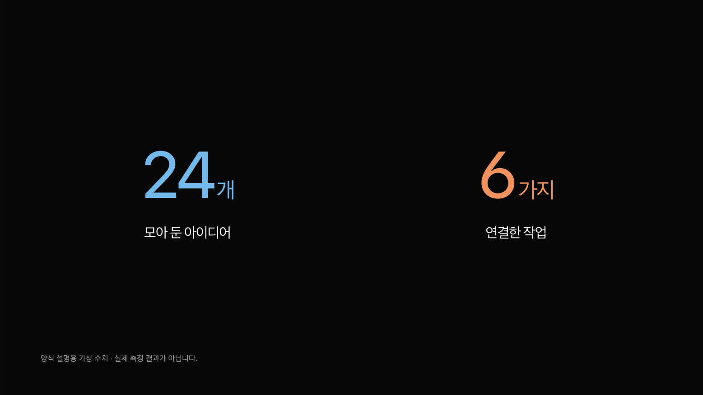

2026.10.23 / MANAGED RESEARCH & IMPLEMENTATION
현장에서 찾고,
양식으로 옮겼습니다.
SF 세션 영상과 서울·도쿄의 실제 발표 사진을 대조했습니다. 사진의 비중, 아이콘의 위계, 제품 타일의 크기 차이를 고치고 Markdown으로 다시 쓸 수 있는 7장 예제로 묶었습니다.
사진의 원근·투사 밝기에서 공식 CSS나 정확한 색값을 추출한 것은 아닙니다. 아래 결과는 관찰을 적용한 독자 템플릿입니다. 연구용 원본 사진과 실제 발표에 쓰는 스톡·자체 자산을 구분했습니다.
COMPLETED CITIES
도쿄와 벵갈루루도, 현장 사진으로.
공식 일정을 기준으로 이미 열린 벵갈루루(10/16)·도쿄(10/20)를 추가 조사했습니다. 도쿄에서는 OpenAI 발표자 세션 사진 12장을 확인했습니다. 벵갈루루의 수치 화면은 발표자·디자인 소속이 미확인이어서 보조 자료로만 남겼습니다.




도쿄 관계도·작은 아이콘 카드도 조사했습니다. 해당 두 구성은 이번 양식에 전용 레이아웃으로 추가하지 않았습니다. 정지 사진으로 애니메이션이나 전체 세션의 구성을 추정하지 않았습니다.
SOURCE → BEFORE → AFTER
사진이 먼저 읽히도록.
SF 키노트의 짧은 상단 설명과 세로 사진 6개를 16:9 화면으로 옮겼습니다.


큰 전체 제목·하단 캡션을 덜어내고 프레임을 키웠습니다. 첫 사진은 얼굴과 휴대폰이 함께 보이도록 크롭을 옮겼습니다. 서로 다른 스톡 사진이므로 원본의 통일된 촬영·조명까지 재현한 것은 아닙니다.
SOURCE → BEFORE → AFTER
색과 이름을, 같은 의미로.
흰색 범주를 포함하고 선 굵기가 같은 자체 SVG를 사용합니다.


20종의 의미 아이콘 키를 지원합니다. 색은 원·아이콘·라벨의 관계를 연결하고, 설명은 발표자 노트로 옮겼습니다. 기존 symbol 입력도 사용할 수 있습니다.
SOURCE → BEFORE → AFTER
사진·UI·수치가, 서로 다른 크기로.
서울과 도쿄의 현장 사진을 바탕으로 높이까지 다른 12개 혼합 타일을 추가했습니다.





기존 mosaic는 유지하고 bento를 별도로 만들었습니다. seoul·recap 두 고정 프리셋을 고를 수 있습니다. 사진과 UI의 원래 색은 살리고 캔버스는 검정으로 유지합니다. 좌표를 직접 적을 필요가 없습니다.
NEW LAYOUT
가운데를 비우는 아이콘.
중앙 메시지와 외곽 아이콘은 별도의 역할을 맡습니다.




새 icon-wall은 1~22개 아이콘을 외곽에 놓습니다. 예제는 실제 협력사 로고 대신 자체 의미 아이콘으로 구성했습니다. 로컬 이미지도 사용할 수 있습니다.
NEW LAYOUT
두 값에, 두 가지 의미색.
같은 위계의 수치를 넓은 여백과 같은 기준선으로 놓습니다.



새 metric-pair는 정확히 두 항목을 받습니다. 값·단위·라벨·색·출처를 params로 바꿉니다. 화면의 숫자는 실제 행사 지표를 옮긴 값이 아닌 가상 예시입니다.
REUSABLE BY INPUT
글과 자료를 바꾸면, 다시 같은 구성으로.
기존 16개 양식에 bento·icon-wall·metric-pair를 더해 19개 양식을 지원합니다. Markdown에 레이아웃과 아이콘 키·이미지·수치를 적으면 같은 렌더러가 배치합니다. AI 연결 없이 재생합니다.
- 입력·배치·원본 보존·Markdown 변환의 독립 테스트 111개 통과.
- 실제 브라우저·모바일·편집·발표자 창·오프라인·PDF 결과는 검증 기록에 범위와 함께 기록합니다.
- 연구용 사진은 자유 사용 예제 자산으로 재분류하지 않았습니다. 발표 예제는 기존 스톡 사진과 직접 작성한 SVG·의미 아이콘을 사용합니다.